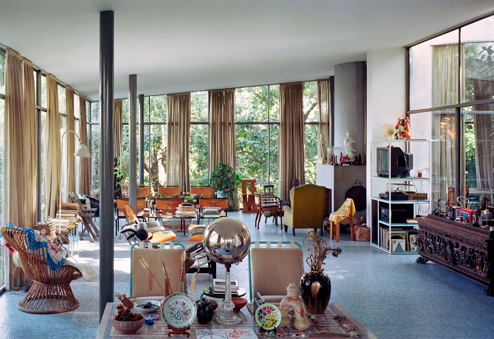
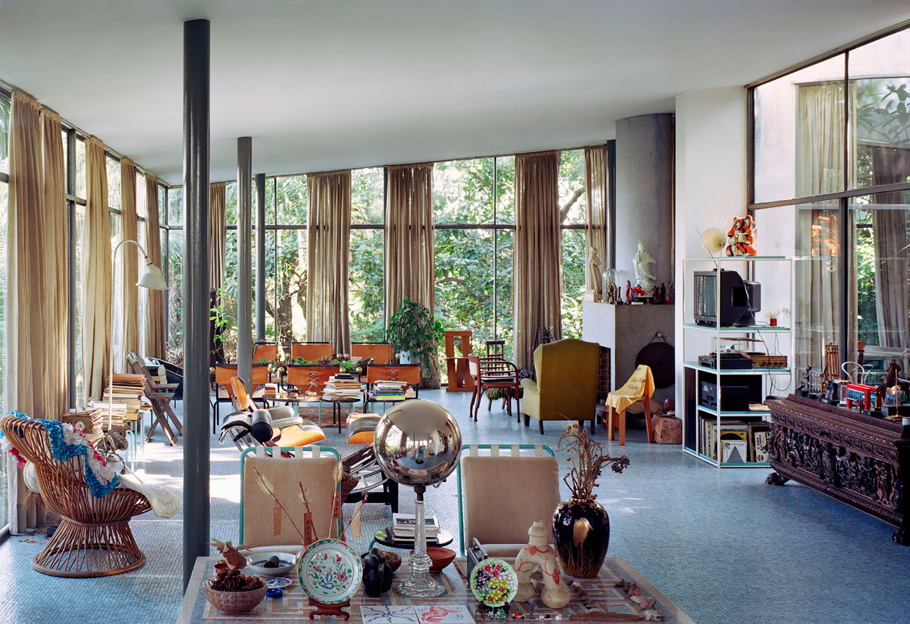
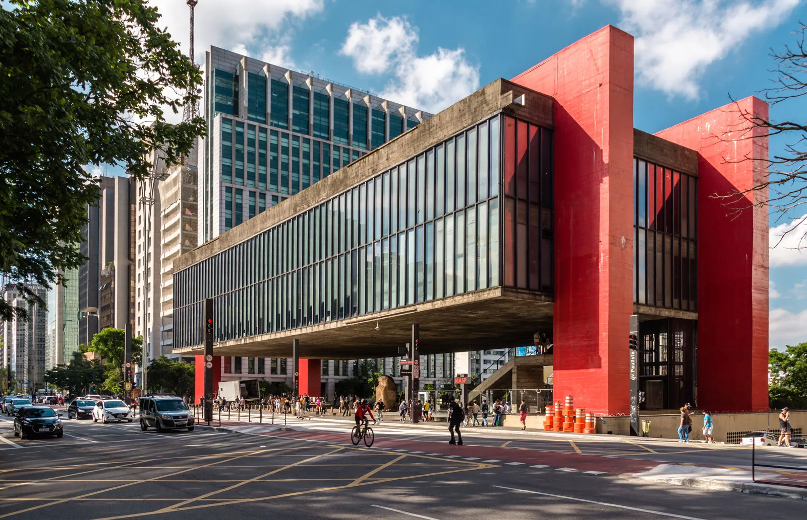
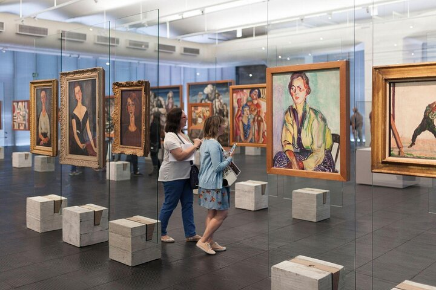
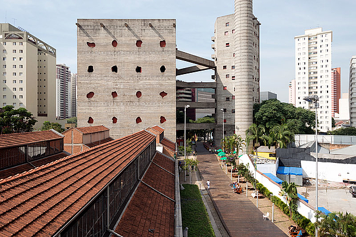
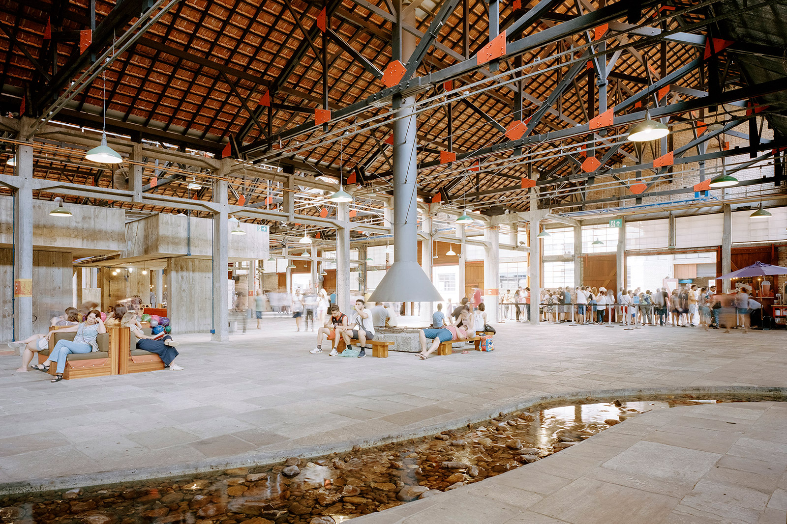
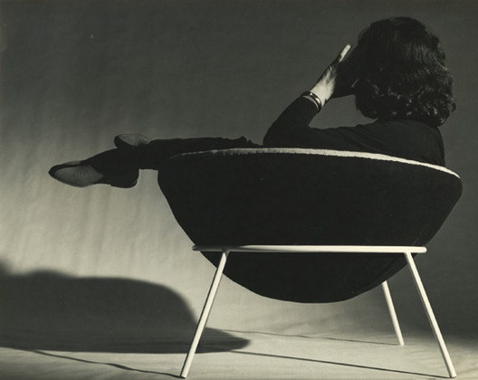
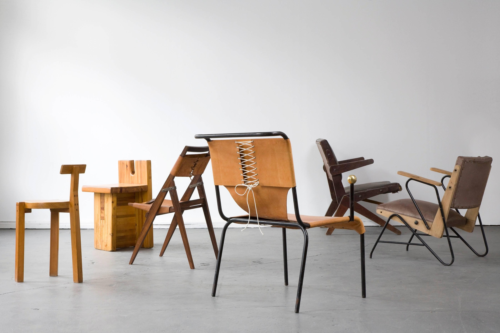

The Glass House
In 1951, Bo Bardi became a Brazilian citizen, started to teach industrial design at the MASP, and created one of her landmark designs: the Casa de Vidro (Glass House), a home for her and her husband on a 7,000-square-meter lot that had formerly been a tea farm on the side of a hill in the Morumbi neighborhood of São Paulo.
The Glass House, a contemporary to both Mies van der Rohe’s and Philip Johnson’s glass houses, was built with a highly Rationalist design. The main structure consists of two slabs of reinforced concrete, where half of the house sits on solid ground and the other half is elevated and supported on slender stilts, allowing for lush vegetation to integrate the structure with its surroundings. The design elevates the entire house, and one enters it from underneath by a flight of stairs into an expansive living area with glass walls.
 

São Paulo Museum of Modern Art
By 1956, it had become evident that the original scope and building of MASP had become insufficient, as the museum needed a much larger exhibit and teaching spaces. In 1958, Bo Bardi started to work on the design and construction of a new MASP, this one centrally located on São Paulo’s Paulista Avenue.
For MASP, which would eventually take 10 years to complete, Lina Bo Bardi designed an expansive concrete-and-glass 74-meter-wide Brutalist structure held on four columns that surround the whole building and lift it 8 meters above the ground. This two-floor, massive yet simple, colorful structure with unobstructed views of the entire city would become a cultural magnet and an icon of the city.
For the Museum–which is surrounded by large windows overlooking Sao Paulo, thus limiting the availability of wall surfaces on which to mount exhibitions–Lina Bo Bardi designed freestanding glass panels supported on concrete blocks on which the canvases are mounted. This environment provides the visitors with a space in which they wander around the art and become part of the exhibition itself.


SESC Pompeia
In 1964, after the completion of the Museu de Arte Moderna da Bahia, Bo Bardi returned to São Paulo under a different political climate as Brazil would start a period of sequential military dictatorships. At this time, Bo Bardi made increasingly simple designs with local materials and called her approach “Arquitetura Povera,” a term probably inspired by the then-prevalent avant-garde Italian art movement “Arte Povera,” which implies simplicity and the use of everyday inexpensive materials.
In 1977, Bo Bardi was approached to create SESC Pompéia, a community center in São Paulo at a site where old building tower structures housed a drum factory. For this project, she deployed the full force of her approach to architecture. She sandblasted the walls of the old factory towers to expose their raw concrete and brick walls and used descending and ascending bridgeways to connect the towers at different points of their façades. When finished in 1986, the community center included gymnasiums, a swimming pool, community areas, galleries, theaters, and workshops but triggered controversy due to its uniquely vernacular approach to architecture.


Furniture Designs
Just as in her architecture, Lina Bo Bardi’s approach to furniture design is highly influenced by modernism and the use of common vernacular language and simple local materials, such as plywood, native Brazilian woods, hides, leather, and steel.

